App items can be displayed as tiles, a table or a Kanban board. The last option is available if the statuses of the app are set up. You can choose the view when creating the app or change it later in the top right corner of the app page.
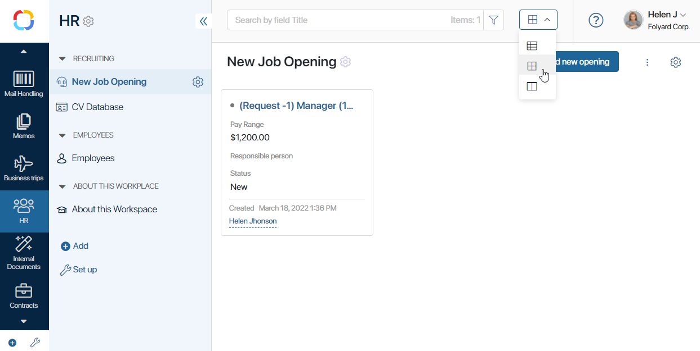
You can define how the table, tiles, or Kanban board will appear. For example, you can choose which item fields to display, sort rows and tiles by parameters, adjust tile sizes, etc. The settings are divided into two types:
global settings that are managed by the Administrator. They are applied for all the users and are exported with the app;
personal settings that each user configures for themselves. To reset them to global settings, click Default.
The administrator can switch between global and personal options in the table, tile or Kanban settings window.
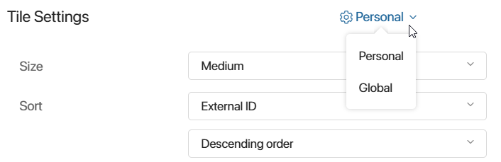
Read more about display parameters and their settings in Table settings, Tiles settings and Kanban board.
Let’s take a closer look at each of the app item view options.
Table view
If you select this view 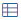, app items will be displayed as a customizable table. Items with overdue business process tasks are marked with a red dot.

To change the width of the column, drag the margin to the right of its name to the right width.
You can sort the items in the table by one of the app parameters. To do this, click on the column name. Sorting is available by system fields, such as Index and Created on, as well as by custom properties for which the system administrator has enabled the Search and sort by field option.
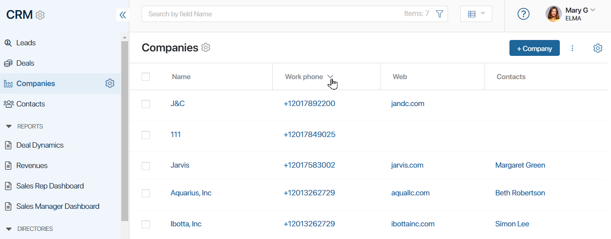
Table settings
You can specify which properties will be shown in the table and sort items by a parameter.
To customize the table, click the icon in the top right corner of the app’s page and select Table Settings.
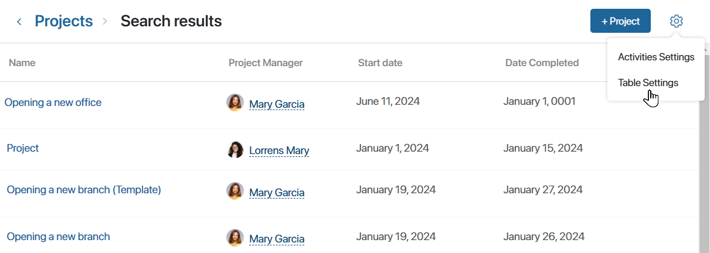
The table settings window will open.
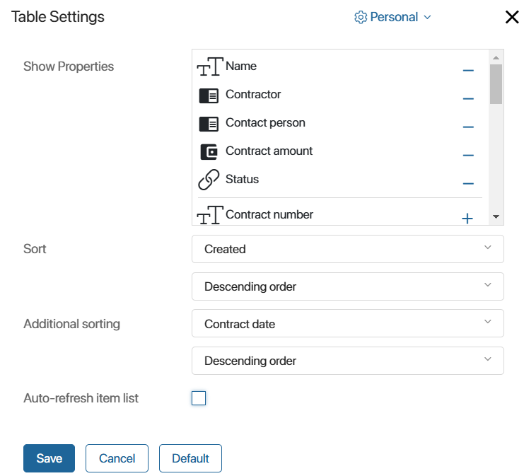
- Show properties. Select the item properties that you want to be displayed in the table. To do so, click the plus icon next to the property name. To delete a property from the list, click the minus icon.
начало примечание
Display features for App (Many) fields in a table
You can add a field of the App (Many) type to the table. In this case, each item in the current app will show links to associated items from another app. If there are many associated items, links to the first 10 items and the total number will be displayed.
However, data for all related items of the selected apps is still loaded, which may increase system load. To speed up display and reduce load, the system administrator can enable enable eager data loading. In this case, only data for the first 10 items is loaded, and the total count is not displayed.
конец примечание
- Sort. Select a parameter from the drop-down list, by which the sorting will be performed when opening the app page. App system fields are available, as well as properties for which the system administrator has enabled the Search and sort by field option. Then specify if the items need to be sorted in ascending or descending order.
- Additional sorting. Select a parameter for additional sorting of app items. For example, if items are sorted by name, and there are items with identical names, you can additionally sort them by the date they were created. You can select system fields, as well as properties with the Search and sort by field option enabled.
- Auto-refresh item list. Enable the option to have the list updated when new items are added, as well as when changes are made to existing items.
Click Save to apply all your changes.
Tiles view
If you select this view 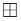, items will be displayed as tiles with a certain set of fields. Items with overdue business process tasks are marked with a red dot.
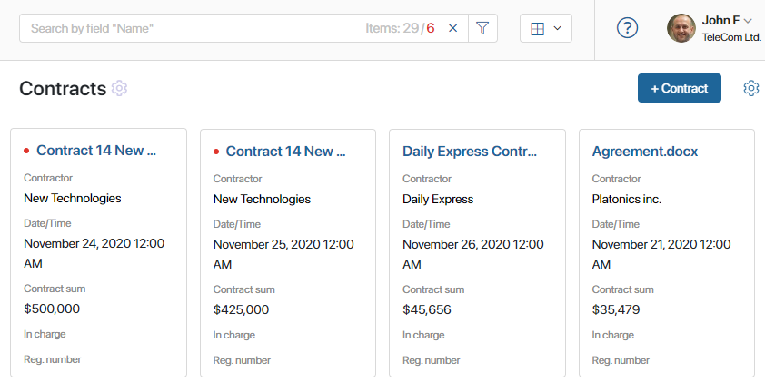
Tile settings
You can set up the tile size, sort tiles by a parameter, and add or remove system information.
To do that, click the icon in the top right corner of the app page and select Tile Settings.
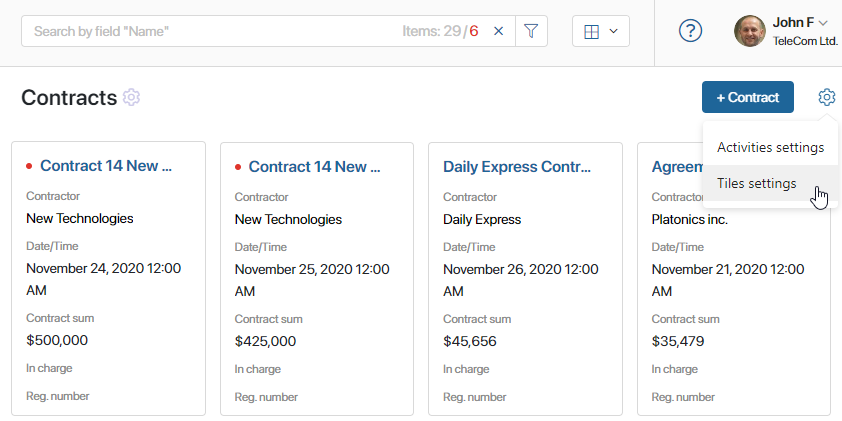
The tile settings window will open.
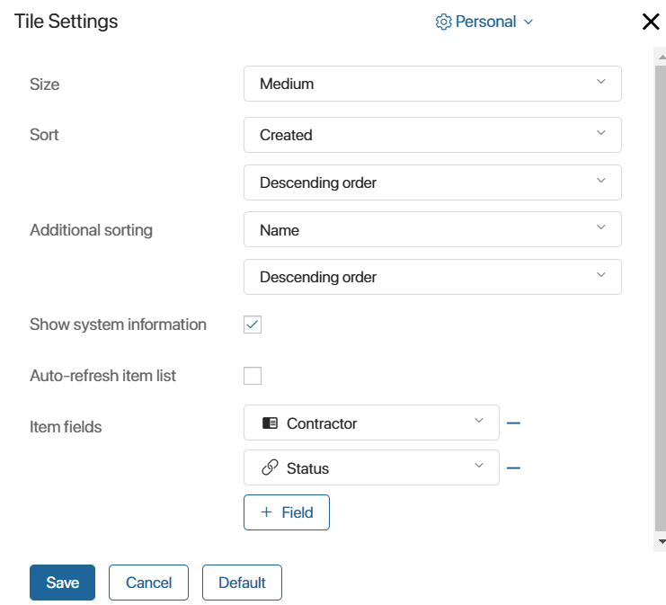
- Size. Choose the tile size (Large, Medium, or Small).
- Sort. Choose the parameter to sort items by. App system fields are available, as well as properties for which the system administrator has enabled the Search and sort by field option. Then specify if the items need to be sorted in ascending or descending order.
- Additional sorting. Select a parameter for additional sorting of app items. For example, if items are sorted by name, and there are items with identical names, you can additionally sort them by the date they were created. You can select system fields, as well as properties with the Search and sort by field option enabled.
- Show system information. Enable the option to display additional information about the author and date of item creation on the app item page.
- Item fields. Here you can select additional fields to be displayed on a tile. Click +Field and select an app field from the list.
Click Save to apply all your changes.
начало примечание
Display features for App (Many) fields in tiles
You can add a field of the App (Many) type to the tiles settings. In this case, each item in the current app will show links to associated items from another app. If there are many associated items, links to the first 10 items and the total number will be displayed.
However, data for all related items of the selected apps is still loaded, which may increase system load. To speed up display and reduce load, the system administrator can enable enable eager data loading. In this case, only data for the first 10 items is loaded, and the total count is not displayed.
конец примечание
Kanban board view
If statuses are set up for the app, its items can also be displayed as a Kanban board. To view all items that are assigned a certain status, click the name of the column on the Kanban board. A new window will open, and the app items will be presented as a table. Read more about using this view in the Kanban board article.
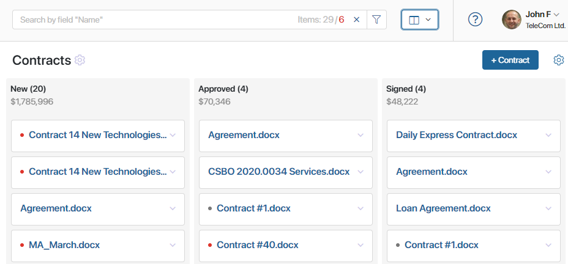
Search and filters
An item search is available for each display mode.
The search bar at the top of the window displays the total number of items in the app and the number of items with overdue tasks.
The default search parameter is the Name field. To use other parameters, for example, to find items with overdue tasks, click the icon in the search bar.
The Search by parameters window will open. You can search for items using:
- Main fields of the item.
- Tasks associated with the item.
- System fields.
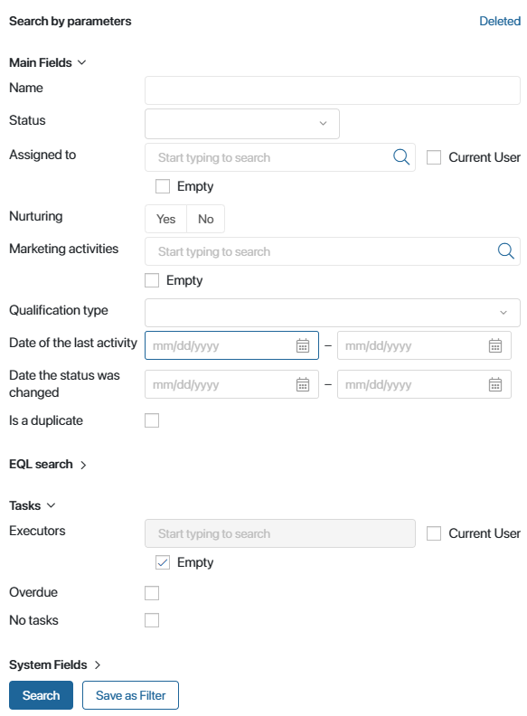
You can select one parameter or several at the same time. If you are going to use the same search parameters multiple times, you can save them as a filter.
For fields of the Users and App types, you can check the Empty box to find items in which this field is not filled out.
Moreover, you can use the Search by parameters window to find deleted app items. To do that, in the upper right corner of the form, click the Deleted link.
Read more about using search in apps in the Search and filters article.
Reducing load when displaying linked app items
A field of the App (many) type can include links to items from another app. This field can be added to the list of displayed properties in the settings for tables, tiles, or kanban boards. When an app page is opened, users will see, for each item, a list of links to related items from another app, as specified in its page.
If there are many related items, only the first 10 links are displayed. However, by default, data for all links from each displayed item is loaded. This data retrieval process can cause high database load and reduce system performance.
System administrators can enable eager loading for linked app items. With this feature, only a single database query is performed, and information is loaded exclusively for the first 10 links for each item on the app page. This setting is applied at the company level and affects all apps.
To enable eager loading, activate the feature flag eagerLoadAppItemsEnabled. For more details, refer to the articles Modify BRIX Enterprise parameters and Modify BRIX Standard parameters. If you are using the SaaS version, contact your BRIX sales rep to enable the feature flag.
The method of retrieving data for related item links affects how they are displayed in tables, tiles, and kanban boards:
- With the default loading method, users can see the total number of hidden items:
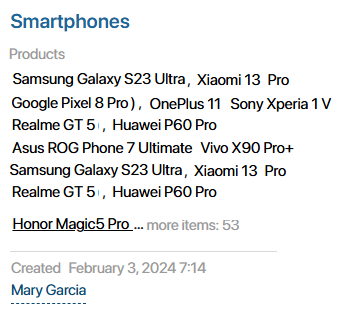
- When eager loading is enabled, users cannot see the total number of items in the field:
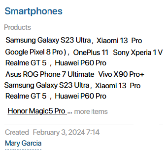
In either case, the user can open the item’s page to view all the links.
Found a typo? Select it and press Ctrl+Enter to send us feedback